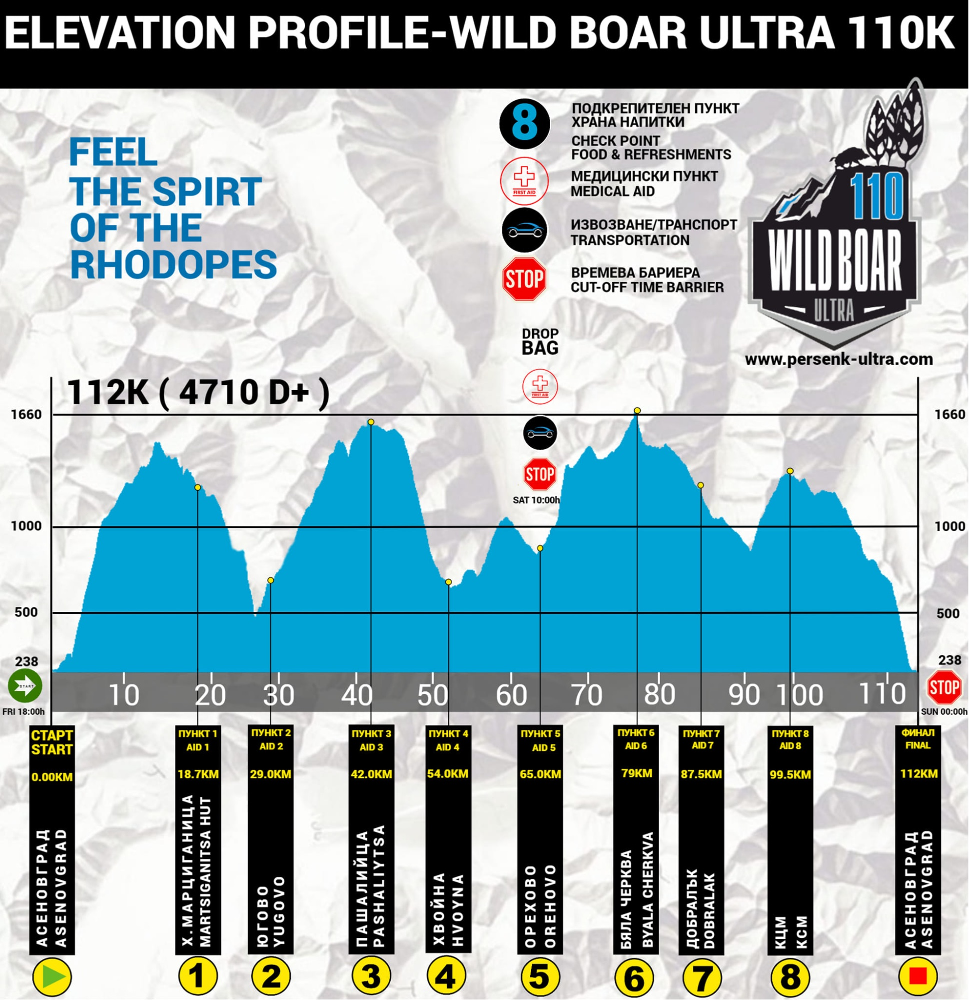
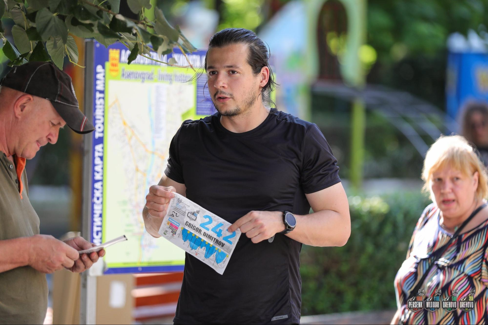
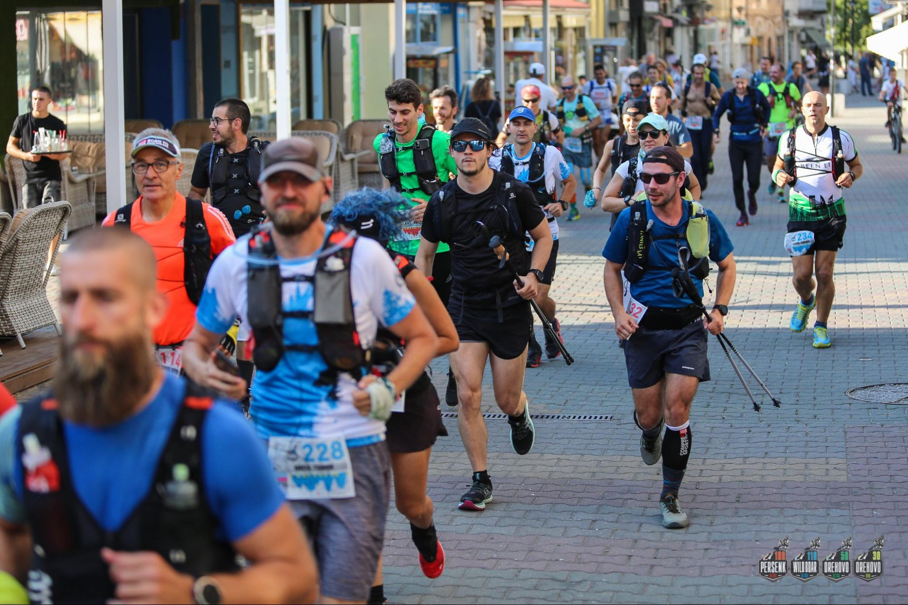
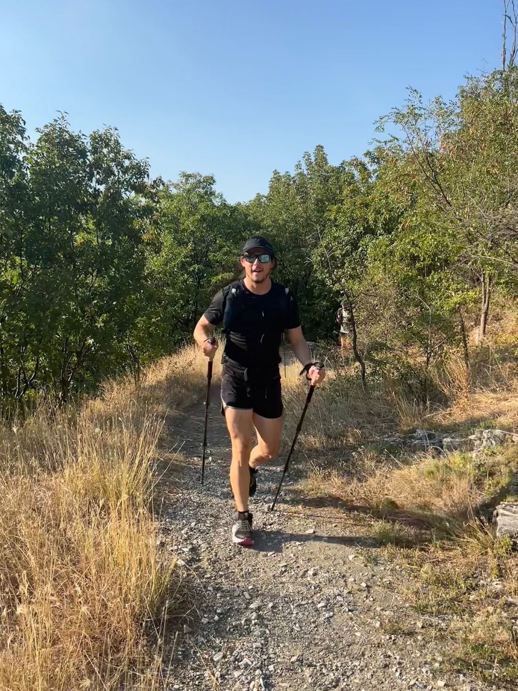
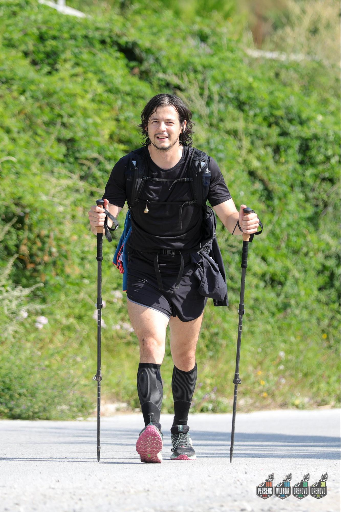
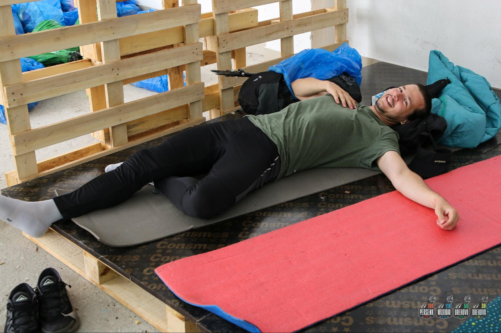
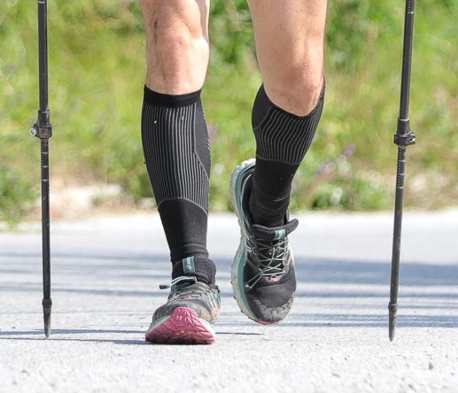
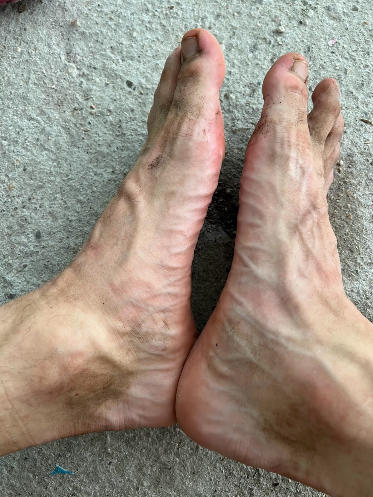
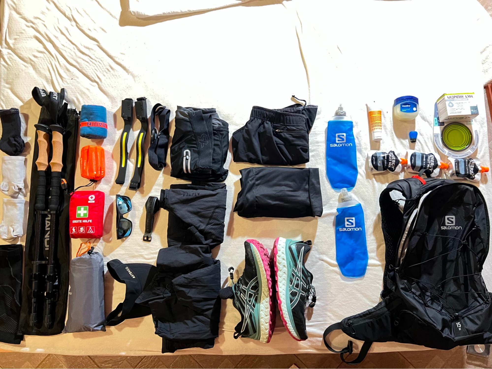
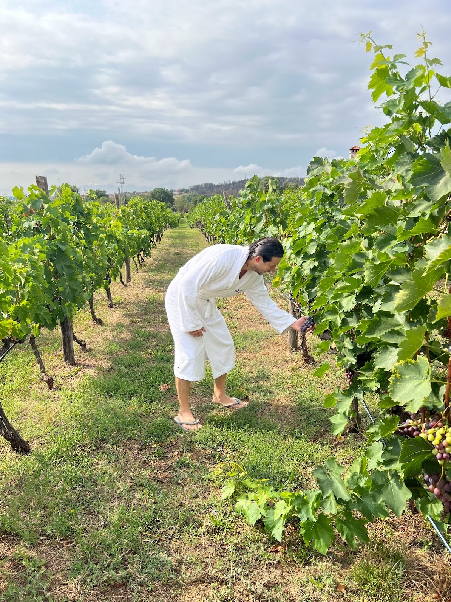

The mighty Rodopa mountain
What did I learn from attempting to run the wild boar 100k race at Persenk ultra?

Back in December, I was having coffee with a friend who announced he was going to attempt a 160k Persenk Ultra mountain race. Under the festive influence of new year’s eve and boosted by two double espressos the initiative seemed very appealing and without hesitation, I let the impulse lead and enrolled in the challenge with an early bird ticket.
The conditions were clear, 110 km in the Robopa mountain in a familiar area. The almost impossible challenge for me yet “almost” was the key. Also, the ticket comes with an option to postpone the challenge by one year with no hassle.
I’ve been running for about 10 years now, and I am not very good at it. It took me 5 to learn how to hold my form and I am still developing it. In December 2019 I insured myself running on the slopes of Madeira island and the annoying shin splint injury still appears whenever I attempt to increase the mileage. I also have flat feet and whenever I exert too much pressure over prolonged periods it takes a toll on my knees.
For the Wild boar race I’ve been preparing since the Spring, unfortunately in Berlin, there’s only a flat surface. My preparation included running and walking for 10k per day for about 6 months. In addition, I’ve been doing intense gym sessions for my overall fitness. For the last 2 months, I’ve been doing one cardio session and one strength session daily. I’ve never felt better and healthier in my life.
Before the race. I didn’t get my diet right before the race so I had to take some laxatives. I haven’t taken magnesium sulfate aka English salt before and honestly, it’s pretty of an effect. Apart from the main impact of attracting water to your intestines and causing rapid defecation, it had a substantial relaxing effect on one’s muscles and mind. I slept like a baby while otherwise being quite anxious in anticipation of similar performances. The drawback is that it sucks out all the water and salts from your body which I was about to find the next day.
On the race day, my father took me from Plovdiv to Asenovgrad where the start of the race took place. I met my friend Anton and his parents and we had to chat about stuff for an hour before the start. There were a lot of special supplements at the start. I didn’t eat a lot that day since I didn’t have the correct food at home.

Finally 6 pm and the start, 37 degrees celsius and horrible denivelation at the start for the first 15k the elevation is 1500m. I was completely soaked at the first kilometre and puked. I felt so bad that I thought about quitting while still being meters after the start. Demotivating. The laxatives rippled through my body and had to do the business in the bushes. Not being able to clean me with water gave me the most horrible rash I’ve ever got and a burning sensation on my butt for the next 15 hours.

Yet finally some good news, after sweating dry, pooping and puking at the beginning. I felt amazing and regained my powers. The sun went off and the temperature dropped. And one hour into the race I was finally ready to start! The climb was tough but doable. I felt I could do this for days with no issues at all. The light went completely off and here we are in the pitch dark at 9 pm the temperature is amazingly little below 20 degrees. There’s a grass surface which is very gentle on the body and I am enjoying it fully.

At 18km I am at the first stop having a chat with the organizers, really nice people. To my surprise the food there was sufficient and there was no need to carry so much food with me. After spending way too much time there I headed to the next chapter. The descent. The horrible 10-kilometre descent took a huge toll on my body, it was very appealing to attempt to run but that’s an absolute no go for the next time. Having to descend 1000m within 10 kilometres proved to be the most difficult part of the race for me. My right knee started making cracking noises and bending in weird directions.
My first tandem appeared and we joined forces. Having casual chats was nice, and it felt safer to be next to someone who did this for 10 consecutive years. Having to know that he succeeded only every next time was very interesting. The most useful part of the tandem was when my headlamp went off in the middle of the night and I couldn’t find the spare one.
I quickly began to realize that I will not be able to finish the race at about 40k. My knee was not behaving as it should on the descents and I was fearing permanent damage. Knowing the exact reason for this, I comforted myself with the thought that I can fix it and I will be more successful next year. Yet I decided to push through the pain for several more hours, just to see what else will happen.
The morning came and it brought fresh powers, I wasn’t sleepy at all. I am not a stranger to insomnia and I am generally familiar with the lack of sleep. The ibuprofen appeared in the picture as well. I felt so empowered by the lack of pain and the powers of the daylight that I began fantasizing about finishing the race. At this point, I was way behind the time so I had to speed up. I started offsetting the pain in the right knee by stepping only on the outer side of my feet which completely eradicated the pain. The tracks from heavy trucks in the mud were very helpful since I could step on the small right-sided slope which was exactly the form that I needed to keep going. My new goal was to reach Orehovo at the cut-off time, take a shower and decide whether to continue or not.

So I did after exactly 15 hours and about 68 kilometres I managed to reach the stop right before elimination time. Yet the prospect of having to finish another 45 kilometres didn’t seem rational given the list of improvement points which I assembled in my head.

So here it is:
- Do something about the flat feet. It’s impossible to run like this. The correction should come either from exercise or insoles. The flat feet lead stepping inwards not causing any problems in normal life but during prolonged efforts, it impacts the geometry of the knees. Fix it.

- I regularly walk in very comfortable sneakers and the skin on my feet is very gentle, making the blisters horrible. Figure out how to avoid blisters but strengthen the skin.

- Choose your own pace. The group was mostly running at the beginning which wasn’t necessary, I’d rather have this energy later in the race and not spend it on jogging at the beginning.
- Learn the terrain, learn the path, learn the segments and have an execution plan. Ideally before the race next year I will do the path at least once before the race possible in the spring.
- Body weight. Consider if losing body weight would be advantageous.
- Choose where to run based on:
Current energy levels
Terrain surface
Slope
I made the mistake to run on downward slopes with very weird surfaces. Avoid running on big rocks which are not attached to the surface. Ideally know the exact terrain and have a plan of where to run and where to walk.
Gear
- Backpack type. I had a 15l backpack bigger than the one carried by most of the participants. I intentionally wanted to have a big backpack to minimize the risks of getting in trouble in case I get lost in the woods. I carried a First Aid kit and a windshield blanket. Additional litre of water and lots of food.
- Backpack organization. My backpack was so tightly packed that I wasn’t able to find anything inside. Figure out what is the optimal distribution of things inside the bag so I have easy access to everything.

- Headlamp. My amazon headlamps were BS and not effective, get a decent one which lasts at least 30 hours. The best case would be a lamp chargeable with some battery inside the backpack or on a belt.
- Get a belt.
- My compression socks were too warm and too tight. The compression socks are an absolute necessity but I need better and thinner ones.
- Gaiters. I had to empty my shoes multiple times from dust and small particles. Lighty trail running gaiters would protect me.
- GPS watch. Using my running app on the phone is not an option (Hello). Strava is an awesome app but it does not offer terrain insights, distance, elevation etc. etc. which are available on more specialized gear.
- Bottoms. I was using running shorts yet tight leggings would be a better choice since they would prevent friction between the legs.
- Tops. My top was perfectly fine, so people who had a pro top seemed more comfortable after half of the race. Need to investigate.
- Poles. Train walking with poles. There are many techniques and I can also invent some. However, race day is not a day for clearing the technique. Go with a proper technique.
- Poles. Get nicer poles. I lost the soft part of my poles very early in the race and the iron pointers were good only for softer terrain. When I used them on asphalt it proceeded with a very high impact which didn’t feel nice on the hands.
Food, supplements and nutrition
- Figure out the food before the race.
- Do not drink alcohol at least a week before the race.
- Salt during the race. I’ve had some hydration packs. They were extremely effective once ingested yet, the hassle of the preparation was way too much, I need those in solid pill form.
- Specialized energy gels are amazing, find out where to acquire those. The ones with BCAA amino acids and high caffeine does wonder. The ones with high salt content can replace the salt pills.
- Ibuprofen at the later stage of the race does wonders.
- Magnesium is necessary to avoid cramps
- Vaseline was necessary against the rash.
- Sunscreen cream.
- Get some proper recovery and something to look forward to after the race.
